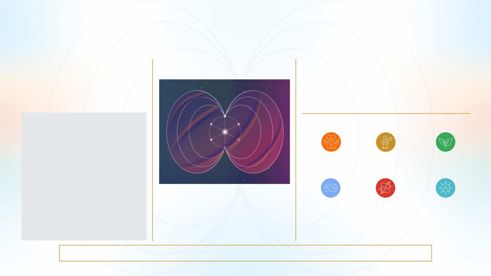

CXO REPORT
Score: Low 1 to 1.99 Avg.2to2.99,High3to4
THE CULTURAL ENERGY LENS
These six cultural weaves express the living fabric of the organisation. Each weave is underpinned by diagnostic themes that reveal
how culture is experienced day to day. On the next page, we examine these themes through the Coherence–Contribution lens to identify strengths and opportunities
CULTURAL WEAVES
Culture is not static - it is a living fabric woven through collective human energy.
The Co-Flourish framework maps six cultural weaves flowing through six human
energy rhythms. This fabric-level view helps leaders see that cultural strengths
and tensions emerge not from isolated factors, but from how these flows align -
or misalign - over time.
Each weave represents a vital dimension of collective flourishing:
Together, these weaves express the cultural fabric through which people
thrive and contribute as one.
WEAVES
VITALITY & BALANCE :
The pulse of renewal, energy,
and sustainable achievement
VOICE & EMPOWERMENT :
Psychological safety,
agency, and authentic expression.
RELATIONAL SYNERGY :
Inclusion, care, fairness,
and mutual trust.
The six Synergy rhythms reflect how human systems stabilise,
activate, and evolve together. Cultural weaves flow through these
rhythms to create the living fabric of the organisation.
PURPOSEFUL CO-CREATION :
Shared meaning, aligned direction,
and collective impact.
HUMAN-CENTRED DESIGN :
Compassionate leadership
and agile systems that serve people.
Resonate
Regulate
Rise
Recover
Radiate
Replenish
GROWTH & CO-EVOLVE :
Learning, mastery,
and adaptive mindsets.
HUMAN ENERGY RHYTHMS
Every organisation has a living cultural rhythm - a dynamic field
shaped by how people think,feel,behave and work together.
The Co-Flourish framework identifies six human energy rhythms
that mirror natural patterns of collective functioning. These
rhythms in flow support the organisation to stabilise its core,
activate purposeful energy, and expand outward to create
sustained impact.
Virat Corp has reached operational equilibrium understanding the current mindset of the efforts and a lack of initiative, which could impact our organization.
Ps: The Energy level data is derived from 87% so this the optimal number forthe coding